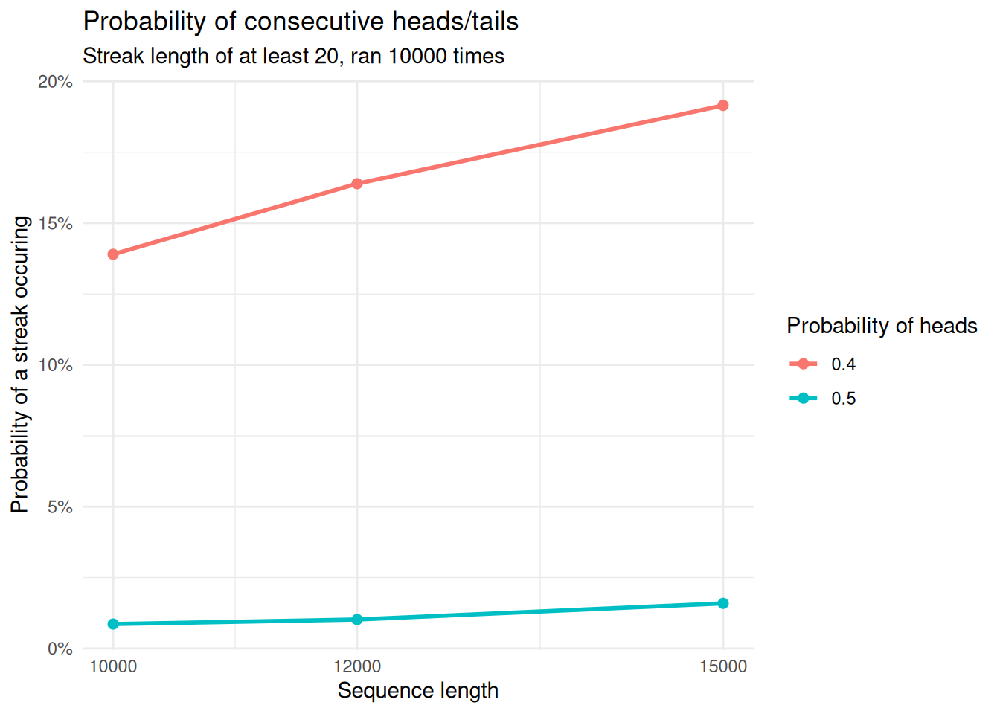

Analysis of the probability of consecutive streaks
Author
hzg00-jpg
Published
November 16, 2024
Suppose you have a binary sequence: 00101101… that is \(n\) bits long (in other words, it contains \(n\) ‘digits’).
What is the possibility of observing a streak with at least \(k\) consecutive bits, given a total bit size of \(n\)? How does that value change with bias? That is, if probability of getting a 1 is no longer 0.5?
The applications of this simple question span can span from cryptography to gambling. For example, suppose you generate a cryptographyically secure pseudorandom number generator (CSPRNG), or deterministic algorithm that generates random-looking numbers that are unpredictable enough for cryptographic use. If you weren’t sure if the generated number is biased, you could examine the frequency of certain streaks appearing in your generated value, and compare that to typical streaks of \(k\) bits in a simulation of the same size. You can also use the results to understand the probability of losing streaks in gambling. If there truly was a 25% chance to win at this game, is your losing streak of 10 expected, or are you extremely unlucky?
The answer to this question is surprisingly nontrivial to solve. Here, we try to answer this question by doing simulations.
Coin analysis
Suppose you have 2 coins, a fair coin, and a biased coin. The biased coin has a 60% chance to flip tails and a 40% chance to flip heads.
You want to find the probability of getting 20 consecutive heads when you flip a coin \(n\) times using both coins, and compare probability of the two. Is rolling it 10000 times using the fair coin likely going to give you 20 heads/tails in a row in any point in time? What about 15000 times? What if instead, we used the biased coin? At what number of rolls, do we have at least a 50% chance to get 20 heads/tails in a row using the fair coins?
Assume, for the sake of the simulation, that \(1\) represents heads, and \(0\) represents tails.
We start by defining a function simulate_streak(), which generates a random binary sequence of length \(n\). The function uses rle() to find the lengths of consecutive bits and checks whether any of those streaks are at least \(k\) bits long, and returns TRUE if such a streak exists and FALSE otherwise.
We then create a function estimate_prob() which uses map_lgl() to repeat the simulation num_trials amount of times. Since each simulation returns either TRUE or FALSE, we can take the mean of the results to estimate the probability of observing a streak of at least \(k\) bits. We use expand_grid() to create combinations of sequence lengths and probabilities of generating a 1, and map2_dbl() to run the simulations for each combination.
plot_results <- results |>filter(sequence_length !=100000)ggplot( plot_results,aes(x = sequence_length,y = streak_probability,color =factor(prob_one),group =factor(prob_one) )) +geom_line(linewidth =1) +geom_point(size =2) +scale_y_continuous(labels = scales::label_percent()) +scale_x_continuous(breaks = sequence_lengths) +labs(title ="Probability of consecutive heads/tails",subtitle =paste0("Streak length of at least ", k, ", ran ", num_trials, " times"),x ="Sequence length",y ="Probability of a streak occuring",color ="Probability of heads" ) +theme_minimal()

(Note: length 100,000 is excluded from the plot)
From the plot, we see that, when the coin is fair, the probability of getting 20 heads/tails in a row is below 5% for all rolls below 15,000. On the other hand, when the coin is biased, the probability of getting a 20 streak rises dramatically, hitting almost 20% for 15,000 rolls and 80% for 100,000 rolls.
An interesting result is how much a relatively small bias can affect the probability of observing long streaks. A slightly biased coin (60/40) was more likely to produce a 20 streak in 10,000 runs than a nonbiased coin in 10x the amount of runs. From a gambler’s perspective, if you are an insane losing streak, it’s much more likely that the game was rigged against you rather than the fact that you were simply just unlucky.